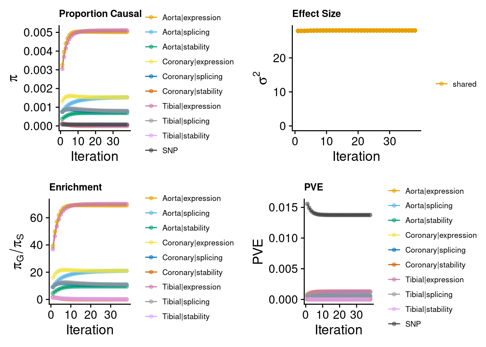
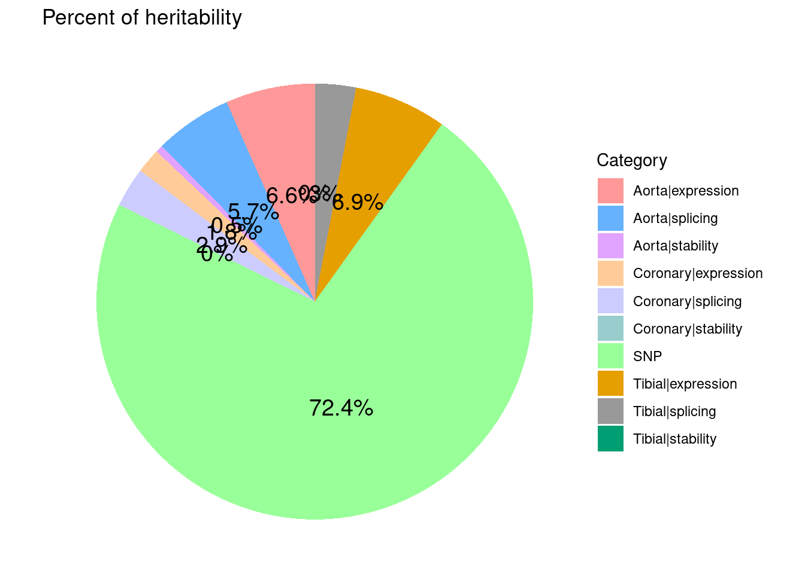
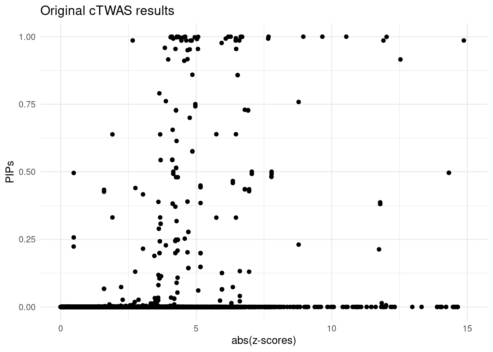

Last updated: 2025-06-30
Checks: 7 0
Knit directory: CAD_cTWAS/
This reproducible R Markdown analysis was created with workflowr (version 1.7.1). The Checks tab describes the reproducibility checks that were applied when the results were created. The Past versions tab lists the development history.
Great! Since the R Markdown file has been committed to the Git repository, you know the exact version of the code that produced these results.
Great job! The global environment was empty. Objects defined in the global environment can affect the analysis in your R Markdown file in unknown ways. For reproduciblity it’s best to always run the code in an empty environment.
The command set.seed(20241004) was run prior to running the code in the R Markdown file. Setting a seed ensures that any results that rely on randomness, e.g. subsampling or permutations, are reproducible.
Great job! Recording the operating system, R version, and package versions is critical for reproducibility.
Nice! There were no cached chunks for this analysis, so you can be confident that you successfully produced the results during this run.
Great job! Using relative paths to the files within your workflowr project makes it easier to run your code on other machines.
Great! You are using Git for version control. Tracking code development and connecting the code version to the results is critical for reproducibility.
The results in this page were generated with repository version e237746. See the Past versions tab to see a history of the changes made to the R Markdown and HTML files.
Note that you need to be careful to ensure that all relevant files for the analysis have been committed to Git prior to generating the results (you can use wflow_publish or wflow_git_commit). workflowr only checks the R Markdown file, but you know if there are other scripts or data files that it depends on. Below is the status of the Git repository when the results were generated:
Ignored files:
Ignored: .Rhistory
Untracked files:
Untracked: TRMT61B.png
Untracked: ZNHIT3.png
Untracked: all_artery_weights.RData
Untracked: aorta_weights.RData
Untracked: biological_process_enrichment.png
Untracked: bubble_plot.png
Untracked: cellular_component_enrich.png
Untracked: combined_pip_by_type_sig.RData
Untracked: coronary_weights.RData
Untracked: ctwas_res_LD.RData
Untracked: ctwas_res_LD_525.RData
Untracked: ctwas_res_all.RData
Untracked: ctwas_res_noLD.RData
Untracked: ctwas_workflow.png
Untracked: finemap_merged_region_res.RData
Untracked: finemap_noLD_res.RData
Untracked: heritability.png
Untracked: molecular_function_enrich.png
Untracked: res.RData
Untracked: res_diag.RData
Untracked: res_mismatch.RData
Untracked: tibial_weights.RData
Untracked: weights.RData
Untracked: weights_group.RData
Untracked: weights_group_LD.RData
Untracked: z_snp.RData
Note that any generated files, e.g. HTML, png, CSS, etc., are not included in this status report because it is ok for generated content to have uncommitted changes.
These are the previous versions of the repository in which changes were made to the R Markdown (analysis/CAD_cTWAS_LD_525.Rmd) and HTML (docs/CAD_cTWAS_LD_525.html) files. If you’ve configured a remote Git repository (see ?wflow_git_remote), click on the hyperlinks in the table below to view the files as they were in that past version.
| File | Version | Author | Date | Message |
|---|---|---|---|---|
| Rmd | e237746 | Xizhi | 2025-06-30 | Publish the updated version of cTWAS |
| html | 2dc9592 | Xizhi | 2025-06-30 | Build site. |
| Rmd | 98f12a8 | Xizhi | 2025-06-30 | Publish the updated version of cTWAS |
Version Notes
This is the newest version (V0.5.25) of ctwas. The main difference between it and the previous versions was the change of an argument called null_method: now null_method sets to “ctwas”, which assumes no signals in a region under the null. The prediction model includes tissues “Aorta”, “Coronary”, “Tibial” with their expression , splicing and stability. The genome build of prediction model and reference was HG38.
Load the required packages.
### Set up
setwd("/project/xinhe/xizhi/Slurm")
library(data.table)
library(ctwas)
library(ggplot2)
library(workflowr)
# library(EnsDb.Hsapiens.v86)The CAD summary statistics data I used was accessed from website: https://www.nature.com/articles/s41588-022-01233-6 . I filtered the original data to maintain the MAF between (0.01, 0.99). The sample size was 1165690.
## GWAS z scores (which is the same as no LD version). Build: GRCh37.
load("z_snp.RData")
gwas_n <- 1165690Here I got the region info from the package cTWAS. SNP info was also accessed from reference panel of cTWAS website. Another thing to notice: genome build needs to be matched. (Here: GRCh38 / hg38)
## Reference: genome build 38, needs to match prediction models!
# Region def (which is the same as no LD version)
region_file <- system.file("extdata/ldetect", "EUR.b38.ldetect.regions.RDS", package = "ctwas")
region_info <- readRDS(region_file)
# LD reference
LD_dir <- "/project2/mstephens/wcrouse/UKB_LDR_0.1"
genome_version <- "b38"
LD_filestem <- sprintf("ukb_%s_0.1_chr%s.R_snp.%s_%s", genome_version, region_info$chrom,
region_info$start, region_info$stop)
region_metatable <- region_info
region_metatable$LD_file <- file.path(LD_dir, paste0(LD_filestem, ".RDS"))
region_metatable$SNP_file <- file.path(LD_dir, paste0(LD_filestem, ".Rvar"))
res <- create_snp_LD_map(region_metatable)
region_info <- res$region_info # same as before?
snp_map <- res$snp_map
LD_map <- res$LD_mapThe prediction model was trained on GTEx in the PredictDB format. The molecular traits were expression, splicing and stability. Here, I included all tissues related to artery: Aorta, Coronary, Tibial.
## Prediction models: all artery tissues with eqtl, sqtl, stability-qtl
# Artery_Aorta
artery_aorta_eqtl <- "mashr_eqtl/eqtl/mashr/mashr_Artery_Aorta.db"
artery_aorta_sqtl <- "mashr_sqtl/sqtl/mashr/mashr_Artery_Aorta.db"
artery_aorta_stabqtl <- "/project/xinhe/xsun/weights_training/weights/stapa/L5/stability_Artery_Aorta.db"
# Artery_Coronary
artery_coronary_eqtl <- "mashr_eqtl/eqtl/mashr/mashr_Artery_Coronary.db"
artery_coronary_sqtl <- "mashr_sqtl/sqtl/mashr/mashr_Artery_Coronary.db"
artery_coronary_stabqtl <- "/project/xinhe/xsun/weights_training/weights/stapa/L5/stability_Artery_Coronary.db"
# Artery_Tibial
artery_tibial_eqtl <- "mashr_eqtl/eqtl/mashr/mashr_Artery_Tibial.db"
artery_tibial_sqtl <- "mashr_sqtl/sqtl/mashr/mashr_Artery_Tibial.db"
artery_tibial_stabqtl <- "/project/xinhe/xsun/weights_training/weights/stapa/L5/stability_Artery_Tibial.db"The goal of this step was to exclude multi-allelic and strand-ambiguous variants, and make the three input data all consistent with each other.
## Harmonize GWAS sum stats
z_snp <- preprocess_z_snp(z_snp, snp_map,
drop_multiallelic = TRUE,
drop_strand_ambig = TRUE,
varID_converter_fun = convert_to_ukb_varIDs)2025-06-30 22:11:11 INFO::Preprocessing z_snp...
2025-06-30 22:11:18 INFO::z_snp has 9155485 variants in total
2025-06-30 22:11:18 INFO::Convert variant IDs
2025-06-30 22:11:39 INFO::9142078 variants left after filtering by the reference SNPs.
2025-06-30 22:11:41 INFO::Remove 14480 multiallelic variants
2025-06-30 22:11:44 INFO::Harmonize 9127598 variants between GWAS and the reference
2025-06-30 22:12:01 INFO::Flip signs for 1272047 (13.94%) variants
2025-06-30 22:12:02 INFO::Remove 1272047 strand ambiguous variants
2025-06-30 22:12:02 INFO::7855551 variants left after preprocessing and harmonization.# Artery_Aorta
# artery_aorta_eqtl_weights <- preprocess_weights(artery_aorta_eqtl,
# region_info,
# gwas_snp_ids = z_snp$id,
# snp_map = snp_map,
# LD_map = LD_map,
# type = "expression",
# context = "Aorta",
# weight_name = "Aorta_expression",
# weight_format = "PredictDB",
# drop_strand_ambig = TRUE,
# scale_predictdb_weights = TRUE,
# load_predictdb_LD = TRUE,
# filter_protein_coding_genes = TRUE,
# varID_converter_fun = convert_to_ukb_varIDs,
# ncore = 2)
# # #
# artery_aorta_sqtl_weights <- preprocess_weights(artery_aorta_sqtl,
# region_info,
# gwas_snp_ids = z_snp$id,
# snp_map = snp_map,
# LD_map = LD_map,
# type = "splicing",
# context = "Aorta",
# weight_name = "Aorta_splicing",
# weight_format = "PredictDB",
# drop_strand_ambig = TRUE,
# scale_predictdb_weights = TRUE,
# load_predictdb_LD = TRUE,
# filter_protein_coding_genes = TRUE,
# varID_converter_fun = convert_to_ukb_varIDs,
# ncore = 2)
# # #
# artery_aorta_stabqtl_weights <- preprocess_weights(artery_aorta_stabqtl,
# region_info,
# gwas_snp_ids = z_snp$id,
# snp_map = snp_map,
# LD_map = LD_map,
# type = "stability",
# context = "Aorta",
# weight_name = "Aorta_stability",
# weight_format = "PredictDB",
# drop_strand_ambig = TRUE,
# scale_predictdb_weights = FALSE,
# load_predictdb_LD = FALSE,
# filter_protein_coding_genes = TRUE,
# varID_converter_fun = convert_to_ukb_varIDs,
# ncore = 2)
# #
# aorta_weights <- c(artery_aorta_eqtl_weights, artery_aorta_sqtl_weights, artery_aorta_stabqtl_weights)
# save(aorta_weights, file = "aorta_weights.RData")
load("aorta_weights.RData")
# # Artery_Coronary
# artery_coronary_eqtl_weights <- preprocess_weights(artery_coronary_eqtl,
# region_info,
# gwas_snp_ids = z_snp$id,
# snp_map = snp_map,
# LD_map = LD_map,
# type = "expression",
# context = "Coronary",
# weight_name = "Coronary_expression",
# weight_format = "PredictDB",
# drop_strand_ambig = TRUE,
# scale_predictdb_weights = TRUE,
# load_predictdb_LD = TRUE,
# filter_protein_coding_genes = TRUE,
# varID_converter_fun = convert_to_ukb_varIDs,
# ncore = 2)
# #
# artery_coronary_sqtl_weights <- preprocess_weights(artery_coronary_sqtl,
# region_info,
# gwas_snp_ids = z_snp$id,
# snp_map = snp_map,
# LD_map = LD_map,
# type = "splicing",
# context = "Coronary",
# weight_name = "Coronary_splicing",
# weight_format = "PredictDB",
# drop_strand_ambig = TRUE,
# scale_predictdb_weights = TRUE,
# load_predictdb_LD = TRUE,
# filter_protein_coding_genes = TRUE,
# varID_converter_fun = convert_to_ukb_varIDs,
# ncore = 2)
#
# artery_coronary_stabqtl_weights <- preprocess_weights(artery_coronary_stabqtl,
# region_info,
# gwas_snp_ids = z_snp$id,
# snp_map = snp_map,
# LD_map = LD_map,
# type = "stability",
# context = "Coronary",
# weight_name = "Coronary_stability",
# weight_format = "PredictDB",
# drop_strand_ambig = TRUE,
# scale_predictdb_weights = FALSE,
# load_predictdb_LD = FALSE,
# filter_protein_coding_genes = TRUE,
# varID_converter_fun = convert_to_ukb_varIDs,
# ncore = 2)
#
# coronary_weights <- c(artery_coronary_eqtl_weights, artery_coronary_sqtl_weights, artery_coronary_stabqtl_weights)
# save(coronary_weights, file = "coronary_weights.RData")
load("coronary_weights.RData")
# # Artery_Tibial
# artery_tibial_eqtl_weights <- preprocess_weights(artery_tibial_eqtl,
# region_info,
# gwas_snp_ids = z_snp$id,
# snp_map = snp_map,
# LD_map = LD_map,
# type = "expression",
# context = "Tibial",
# weight_name = "Tibial_expression",
# weight_format = "PredictDB",
# drop_strand_ambig = TRUE,
# scale_predictdb_weights = TRUE,
# load_predictdb_LD = TRUE,
# filter_protein_coding_genes = TRUE,
# varID_converter_fun = convert_to_ukb_varIDs,
# ncore = 2)
#
# artery_tibial_sqtl_weights <- preprocess_weights(artery_tibial_sqtl,
# region_info,
# gwas_snp_ids = z_snp$id,
# snp_map = snp_map,
# LD_map = LD_map,
# type = "splicing",
# context = "Tibial",
# weight_name = "Tibial_splicing",
# weight_format = "PredictDB",
# drop_strand_ambig = TRUE,
# scale_predictdb_weights = TRUE,
# load_predictdb_LD = TRUE,
# filter_protein_coding_genes = TRUE,
# varID_converter_fun = convert_to_ukb_varIDs,
# ncore = 2)
#
# artery_tibial_stabqtl_weights <- preprocess_weights(artery_tibial_stabqtl,
# region_info,
# gwas_snp_ids = z_snp$id,
# snp_map = snp_map,
# LD_map = LD_map,
# type = "stability",
# context = "Tibial",
# weight_name = "Tibial_stability",
# weight_format = "PredictDB",
# drop_strand_ambig = TRUE,
# scale_predictdb_weights = FALSE,
# load_predictdb_LD = FALSE,
# filter_protein_coding_genes = TRUE,
# varID_converter_fun = convert_to_ukb_varIDs,
# ncore = 2)
#
# tibial_weights <- c(artery_tibial_eqtl_weights, artery_tibial_sqtl_weights, artery_tibial_stabqtl_weights)
# save(tibial_weights, file = "tibial_weights.RData")
load("tibial_weights.RData")
#
overall_weights <- c(aorta_weights, coronary_weights, tibial_weights)After all the inputs ready, run the cTWAS main functions.
### Run cTWAS (Version 5.25)
# ctwas_res_LD_525 <- ctwas_sumstats(z_snp,
# overall_weights,
# region_info,
# LD_map,
# snp_map,
# thin = 1,
# maxSNP = 20000,
# min_group_size = 100,
# group_prior_var_structure = "shared_all",
# min_nonSNP_PIP = 0.5,
# min_abs_corr = 0.1,
# ncore = 2,
# ncore_LD = 1,
# save_cor = TRUE,
# cor_dir = "./cor_matrix",
# force_compute_cor = FALSE)
#
# save(ctwas_res_LD_525, file = "ctwas_res_LD_525.RData")
load("ctwas_res_LD_525.RData")
z_gene <- ctwas_res_LD_525$z_gene
param <- ctwas_res_LD_525$param
finemap_res <- ctwas_res_LD_525$finemap_res
susie_alpha_res <- ctwas_res_LD_525$susie_alpha_res
boundary_genes <- ctwas_res_LD_525$boundary_genes
region_data <- ctwas_res_LD_525$region_data
screen_res <- ctwas_res_LD_525$screen_resmake_convergence_plots(param, gwas_n, colors = c("#E69F00", "#56B4E9", "#009E73",
"#F0E442", "#0072B2", "#D55E00",
"#CC79A7", "#999999", "#E1A3FF",
"#3C3C3C"))
| Version | Author | Date |
|---|---|---|
| 2dc9592 | Xizhi | 2025-06-30 |
ctwas_parameters <- summarize_param(param, gwas_n, enrichment_test = "fisher")
ctwas_parameters$group_size
Aorta|expression Aorta|splicing Aorta|stability Coronary|expression
10403 29657 6149 9496
Coronary|splicing Coronary|stability Tibial|expression Tibial|splicing
29290 4043 10600 30075
Tibial|stability SNP
7369 7855551
$group_prior
Aorta|expression Aorta|splicing Aorta|stability Coronary|expression
5.021597e-03 1.527737e-03 6.949330e-04 1.532536e-03
Coronary|splicing Coronary|stability Tibial|expression Tibial|splicing
7.906239e-04 1.739986e-09 5.102625e-03 7.929386e-04
Tibial|stability SNP
1.232691e-05 7.276586e-05
$group_prior_var
Aorta|expression Aorta|splicing Aorta|stability Coronary|expression
28.05485 28.05485 28.05485 28.05485
Coronary|splicing Coronary|stability Tibial|expression Tibial|splicing
28.05485 28.05485 28.05485 28.05485
Tibial|stability SNP
28.05485 28.05485
$log_enrichment
Aorta|expression Aorta|splicing Aorta|stability Coronary|expression
4.234256 3.044296 2.256568 3.047432
Coronary|splicing Coronary|stability Tibial|expression Tibial|splicing
2.385575 -10.641125 4.250263 2.388499
Tibial|stability
-1.775462
$log_enrichment_se
Aorta|expression Aorta|splicing Aorta|stability Coronary|expression
0.1442072 0.1542293 0.4853931 0.2652518
Coronary|splicing Coronary|stability Tibial|expression Tibial|splicing
0.2118914 377.0294211 0.1419275 0.2089233
Tibial|stability
3.3181833
$enrichment_pval
Aorta|expression Aorta|splicing Aorta|stability Coronary|expression
3.467169e-74 5.733426e-42 1.192298e-03 1.933605e-15
Coronary|splicing Coronary|stability Tibial|expression Tibial|splicing
2.765544e-16 1.000000e+00 2.263822e-77 4.531678e-17
Tibial|stability
1.000000e+00
$group_pve
Aorta|expression Aorta|splicing Aorta|stability Coronary|expression
1.257260e-03 1.090437e-03 1.028424e-04 3.502485e-04
Coronary|splicing Coronary|stability Tibial|expression Tibial|splicing
5.573322e-04 1.693068e-10 1.301740e-03 5.739447e-04
Tibial|stability SNP
2.186189e-06 1.375717e-02
$total_pve
[1] 0.01899316
$prop_heritability
Aorta|expression Aorta|splicing Aorta|stability Coronary|expression
6.619542e-02 5.741209e-02 5.414706e-03 1.844076e-02
Coronary|splicing Coronary|stability Tibial|expression Tibial|splicing
2.934383e-02 8.914091e-09 6.853730e-02 3.021849e-02
Tibial|stability SNP
1.151040e-04 7.243223e-01 data <- data.frame(
category = names(ctwas_parameters$prop_heritability),
percentage = ctwas_parameters$prop_heritability
)
data$percentage_label <- paste0(round(data$percentage * 100, 1), "%")
ggplot(data, aes(x = "", y = percentage, fill = category)) +
geom_bar(stat = "identity", width = 1) +
coord_polar("y", start = 0) +
theme_void() + # Remove background and axes
geom_text(aes(label = percentage_label),
position = position_stack(vjust = 0.5), size = 5) +
scale_fill_manual(values = c("#FF9999", "#66B2FF", "#E1A3FF", "#FFCC99", "#CCCCFF", "#99CCCC", "#99FF99",
"#E69F00", "#999999", "#009E73")) +
labs(fill = "Category") +
ggtitle("Percent of heritability")
| Version | Author | Date |
|---|---|---|
| 2dc9592 | Xizhi | 2025-06-30 |
This step was to compare the Z-scores and fine-mapping PIPs. We generally expect high PIP molecular traits to have high Z-scores.
In this case, we could see all of the points with high abs(Z-score) had high PIPs, except 1 point(Tibial expression, z-score = -2.65, PIP = 0.99).
ggplot(data = finemap_res[finemap_res$type!="SNP",], aes(x = abs(z), y = susie_pip)) +
geom_point() +
labs(title = "Original cTWAS results", x = "abs(z-scores)", y = "PIPs") +
xlim(0, 15) +
theme_minimal() Warning: Removed 3 rows containing missing values (`geom_point()`).
| Version | Author | Date |
|---|---|---|
| 2dc9592 | Xizhi | 2025-06-30 |
mapping_table <- readRDS("/project2/xinhe/shared_data/multigroup_ctwas/weights/mapping_files/PredictDB_mapping.RDS")
mapping_munro <- readRDS("/project2/xinhe/shared_data/multigroup_ctwas/weights/mapping_files/Munro_mapping.RDS")
mapping_two <- rbind(mapping_table,mapping_munro)
finemap_res <- anno_finemap_res(finemap_res,
snp_map = snp_map,
mapping_table = mapping_two,
add_gene_annot = TRUE,
map_by = "molecular_id",
drop_unmapped = TRUE,
add_position = TRUE,
use_gene_pos = "mid")2025-06-30 22:12:31 INFO::Annotating fine-mapping result...
2025-06-30 22:12:31 INFO::Map molecular traits to genes
2025-06-30 22:12:31 INFO::Split PIPs for molecular traits mapped to multiple genes
2025-06-30 22:12:34 INFO::Add gene positions
2025-06-30 22:12:34 INFO::Add SNP positionssusie_alpha_res <- anno_susie_alpha_res(susie_alpha_res,
mapping_table = mapping_two,
map_by = "molecular_id",
drop_unmapped = TRUE)2025-06-30 22:12:38 INFO::Annotating susie alpha result...
2025-06-30 22:12:38 INFO::Map molecular traits to genes
2025-06-30 22:12:39 INFO::Split PIPs for molecular traits mapped to multiple genescombined_pip_by_type <- combine_gene_pips(susie_alpha_res,
group_by = "gene_name",
by = "type",
method = "combine_cs",
filter_cs = TRUE,
include_cs_id = TRUE)
combined_pip_by_type_0.8 <- subset(combined_pip_by_type, combined_pip > 0.8)
DT::datatable(combined_pip_by_type_0.8,caption = htmltools::tags$caption(style = 'caption-side: topleft; text-align = left; color:black;','Gene PIPs, only genes with credible sets are shown'),
options = list(pageLength = 10))
sessionInfo()R version 4.2.0 (2022-04-22)
Platform: x86_64-pc-linux-gnu (64-bit)
Running under: Red Hat Enterprise Linux 8.4 (Ootpa)
Matrix products: default
BLAS/LAPACK: /software/openblas-0.3.13-el8-x86_64/lib/libopenblas_skylakexp-r0.3.13.so
locale:
[1] LC_CTYPE=en_US.UTF-8 LC_NUMERIC=C
[3] LC_TIME=en_US.UTF-8 LC_COLLATE=en_US.UTF-8
[5] LC_MONETARY=en_US.UTF-8 LC_MESSAGES=en_US.UTF-8
[7] LC_PAPER=en_US.UTF-8 LC_NAME=C
[9] LC_ADDRESS=C LC_TELEPHONE=C
[11] LC_MEASUREMENT=en_US.UTF-8 LC_IDENTIFICATION=C
attached base packages:
[1] stats graphics grDevices utils datasets methods base
other attached packages:
[1] ggplot2_3.4.3 ctwas_0.5.26 data.table_1.14.8 workflowr_1.7.1
loaded via a namespace (and not attached):
[1] colorspace_2.1-0 rjson_0.2.21
[3] ellipsis_0.3.2 rprojroot_2.0.3
[5] XVector_0.38.0 locuszoomr_0.3.5
[7] GenomicRanges_1.50.2 fs_1.5.2
[9] rstudioapi_0.14 farver_2.1.1
[11] DT_0.22 ggrepel_0.9.3
[13] bit64_4.0.5 AnnotationDbi_1.60.2
[15] fansi_1.0.4 xml2_1.3.3
[17] codetools_0.2-18 logging_0.10-108
[19] cachem_1.0.8 knitr_1.42
[21] jsonlite_1.8.7 Rsamtools_2.14.0
[23] dbplyr_2.3.2 png_0.1-7
[25] readr_2.1.4 compiler_4.2.0
[27] httr_1.4.7 Matrix_1.6-4
[29] fastmap_1.1.1 lazyeval_0.2.2
[31] cli_3.6.2 later_1.3.0
[33] htmltools_0.5.7 prettyunits_1.1.1
[35] tools_4.2.0 gtable_0.3.4
[37] glue_1.6.2 GenomeInfoDbData_1.2.9
[39] dplyr_1.1.3 rappdirs_0.3.3
[41] Rcpp_1.0.11 Biobase_2.58.0
[43] jquerylib_0.1.4 vctrs_0.6.3
[45] Biostrings_2.66.0 rtracklayer_1.58.0
[47] crosstalk_1.2.0 xfun_0.40
[49] stringr_1.5.0 ps_1.7.0
[51] irlba_2.3.5 lifecycle_1.0.4
[53] restfulr_0.0.15 ensembldb_2.22.0
[55] XML_3.99-0.9 getPass_0.2-2
[57] zlibbioc_1.44.0 zoo_1.8-11
[59] scales_1.2.1 gggrid_0.2-0
[61] hms_1.1.3 promises_1.2.0.1
[63] MatrixGenerics_1.10.0 ProtGenerics_1.30.0
[65] parallel_4.2.0 SummarizedExperiment_1.28.0
[67] AnnotationFilter_1.22.0 LDlinkR_1.3.0
[69] yaml_2.3.7 curl_4.3.2
[71] memoise_2.0.1 sass_0.4.1
[73] biomaRt_2.54.1 stringi_1.7.12
[75] RSQLite_2.3.1 highr_0.9
[77] S4Vectors_0.36.2 BiocIO_1.8.0
[79] GenomicFeatures_1.50.4 BiocGenerics_0.44.0
[81] filelock_1.0.2 BiocParallel_1.32.6
[83] GenomeInfoDb_1.34.9 rlang_1.1.1
[85] pkgconfig_2.0.3 matrixStats_1.2.0
[87] bitops_1.0-7 evaluate_0.15
[89] lattice_0.20-45 purrr_1.0.2
[91] labeling_0.4.3 GenomicAlignments_1.34.1
[93] htmlwidgets_1.6.2 cowplot_1.1.1
[95] bit_4.0.5 processx_3.5.3
[97] tidyselect_1.2.0 magrittr_2.0.3
[99] AMR_3.0.0 R6_2.5.1
[101] IRanges_2.32.0 generics_0.1.3
[103] DelayedArray_0.24.0 DBI_1.1.3
[105] withr_2.5.0 pgenlibr_0.3.6
[107] pillar_1.9.0 whisker_0.4
[109] KEGGREST_1.38.0 RCurl_1.98-1.12
[111] mixsqp_0.3-54 tibble_3.2.1
[113] crayon_1.5.2 utf8_1.2.3
[115] BiocFileCache_2.6.1 plotly_4.10.0
[117] tzdb_0.4.0 rmarkdown_2.21
[119] progress_1.2.2 grid_4.2.0
[121] blob_1.2.4 callr_3.7.0
[123] git2r_0.30.1 digest_0.6.33
[125] tidyr_1.3.0 httpuv_1.6.5
[127] stats4_4.2.0 munsell_0.5.0
[129] viridisLite_0.4.2 bslib_0.3.1